Google Cloud SQL is a fully-managed database service that makes it easy to set-up, maintain, manage and administer your relational MySQL databases in the cloud.
In this lab, we will create a new, empty Cloud SQL instance, connect to it using the MySQL command line interface, and create a new, empty database. We then load tables into that database and run example queries.
What you'll learn
- How to access the Cloud SQL web UI in the Google Cloud Console.
- How to create a Cloud SQL instance using the Google Cloud Console.
- How to set a root password using the Google Cloud Console.
- How to connect to your Cloud SQL instance via the Cloud Shell.
- How to delete your Cloud SQL instance using the Google Cloud Console.
What you'll need
In the Google Cloud Console, click the Menu icon on the top left of the screen

Scroll down and select SQL in the Databases subsection
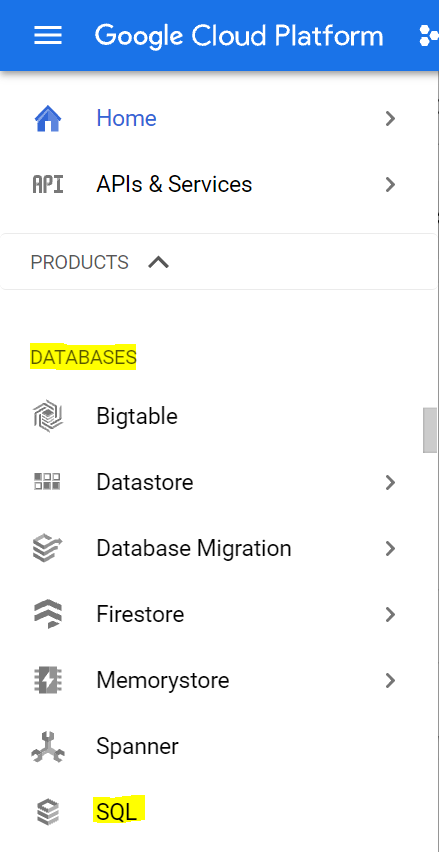
You should now see the Cloud SQL web UI, and assuming you are using a project that does not currently have any Cloud SQL instances, you will see a dialog box inviting you to create a new Cloud SQL instance.
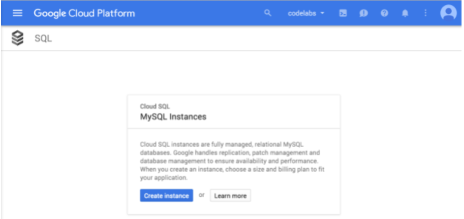
If you happen to be using a project that already has one or more Cloud SQL instances, you will instead see a list of those instances
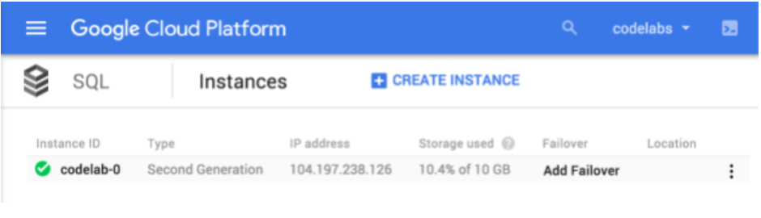
Click on "Create Instance"
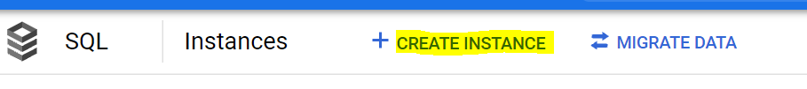
Choose "MySQL" as the database engine
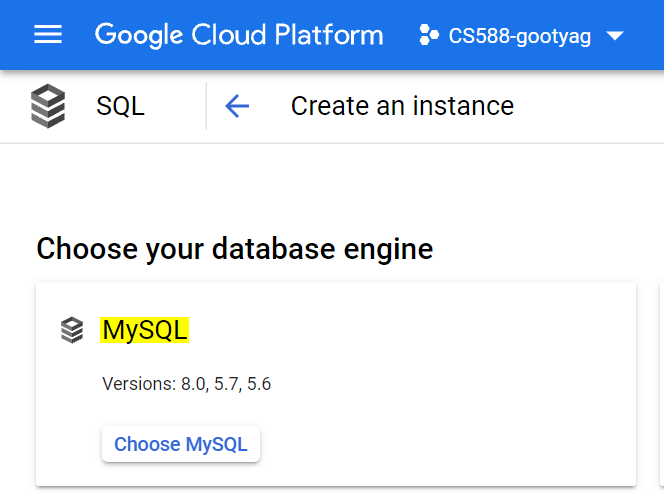
Enable the API if it is not already enabled
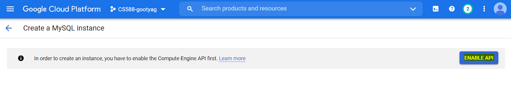
- Enter the name of the Instance as "codelab-0"
- Enter or choose a password
- Choose region and zone as "us-west1(Oregon)"
- Select the Zonal availability as "Single zone"
- Let all other options have default values
The UI should look similar to the below screenshot with all the selected options

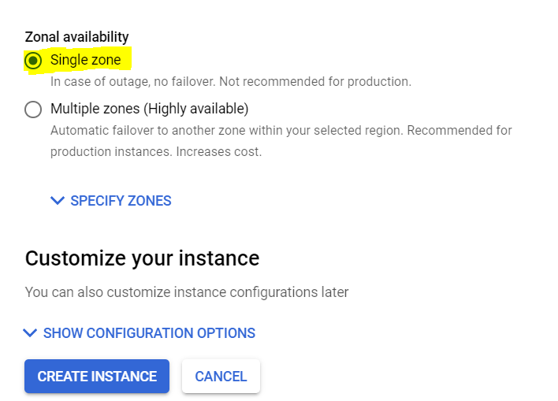
- Click on "Create Instance". It might take a couple of minutes for the instance to be created.
The created instance page should look like this with a green tick mark
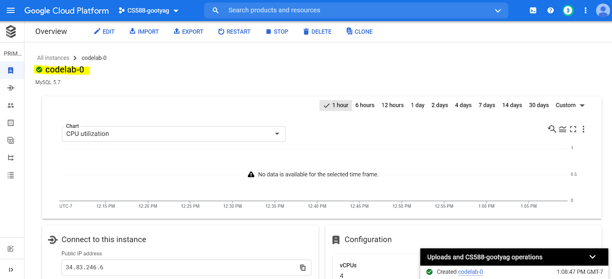
Activate Google Cloud Shell by pressing the prompt button in the Google Cloud Console
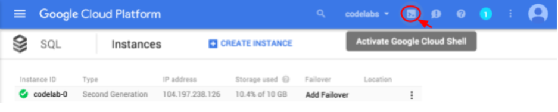
If this is the first time you have used the Google Cloud Shell for this project, you will see the Google Cloud Shell screen. Press Start Cloud Shell
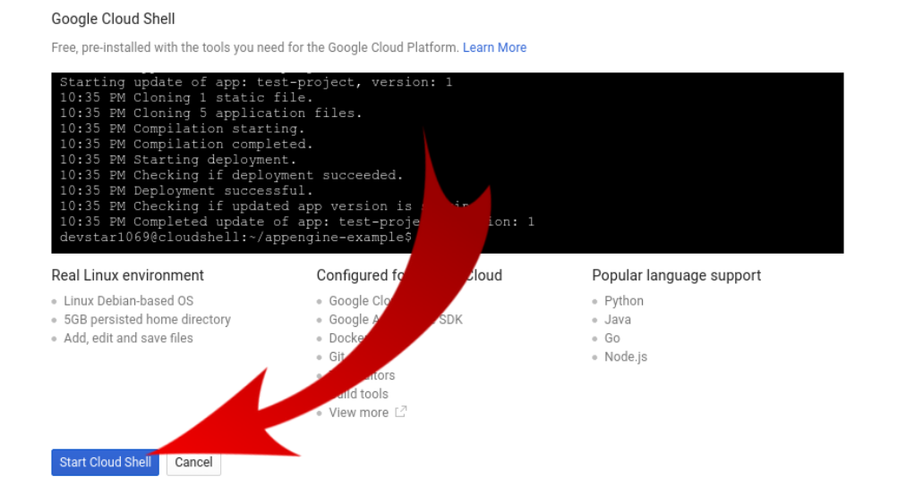
The new Cloud Shell will be displayed at the bottom of the Google Cloud Console, either after you press Start Cloud Shell on the Google Cloud Shell screen if this is the first time it has been used with this project, or immediately after pressing the Activate Google Cloud Shell button if it has been used before.
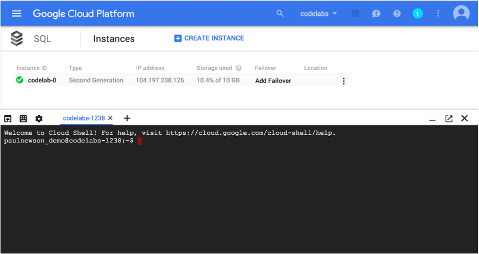
Connect to your Cloud SQL instance using the gcloud sql command shown below, but replace "codelab-0" with the name of your instance, if different:
gcloud sql connect codelab-0 --user=root
Enable the API by typing "y"
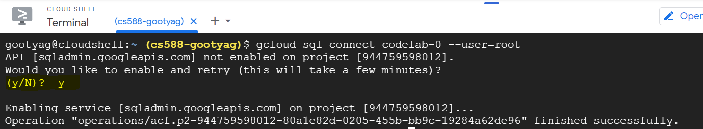
As shown here, you will be prompted to enter the password you set in the previous step. You now have a fully functional MySQL prompt, signed in as root.
Enter the password that was set for the instance previously
You should see:
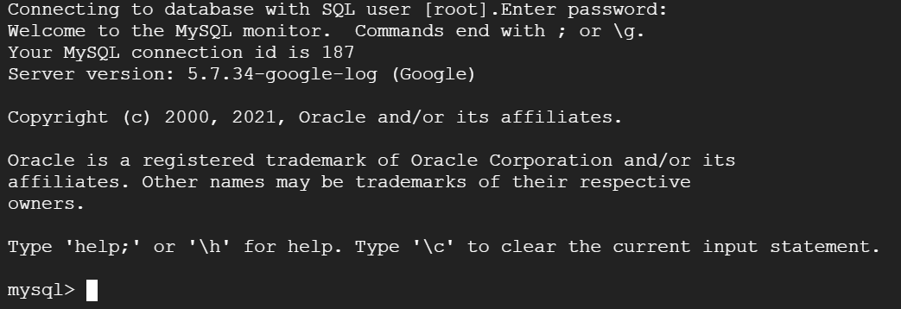
You can use this to enter SQL statements, such as this one to create a new database called "codelab":
mysql> CREATE DATABASE codelab; Query OK, 1 row affected (0.00 sec)
If the Query comes back with an OK your instance works. Let's exit and load some sample data to run some real queries.
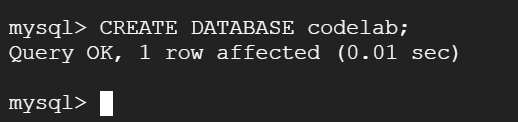
Type exit; and press enter to exit the mysql prompt.
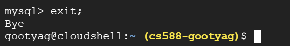
NOTE - Provide Screenshot of completed query results, such that the name of your project is visible in the screenshot
We will load the employee sample data set which you find in the official MySQL documentation.
First we need to execute the following two commands to download the scripts and data:
$ wget https://codeload.github.com/datacharmer/test_db/zip/master -O sampledb.zip $ unzip sampledb.zip && cd test_db-master
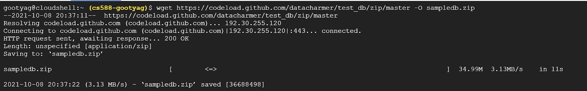
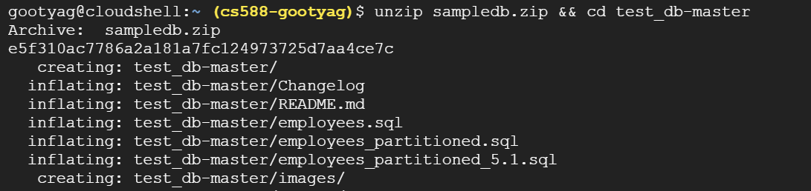
Second we need to create the database and tables, and load the data. Again, replace codelab-0 with the name of your instance, if different and enter the instance password
$ gcloud sql connect codelab-0 --user=root < employees.sql
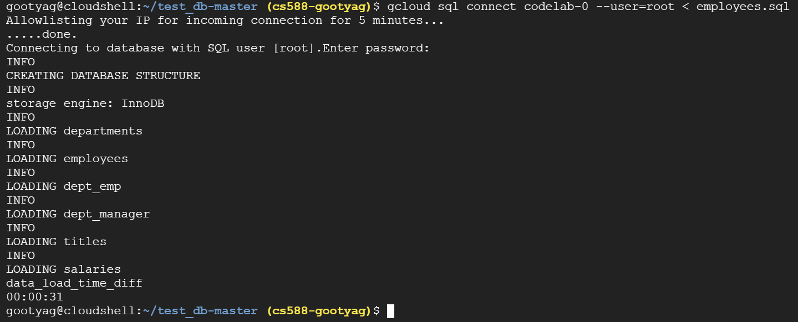
Now we can query the data, you find some sample queries below. You can also create some queries yourself. To familiarize yourself with the db schema, look into the employees.sql file. First login to the sql prompt and switch to the employee database. Again, replace codelab-0 with the name of your instance, if different
$ gcloud sql connect codelab-0 --user=root mysql> USE employees;
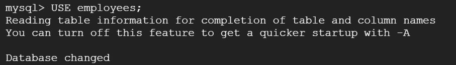
mysql> SELECT avg(s.salary) avg_salary_by_hire_year, YEAR(e.hire_date) FROM employees e, salaries s WHERE e.emp_no = s.emp_no GROUP BY YEAR(e.hire_date);
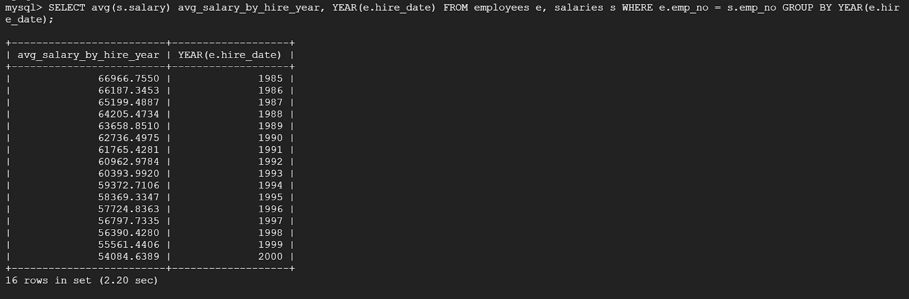
mysql> SELECT de.dept_no, sum(s.salary) sum_salaries_per_department FROM employees e, salaries s, dept_emp de WHERE e.emp_no = de.emp_no AND e.emp_no = s.emp_no GROUP BY de.dept_no;
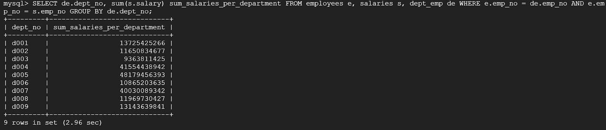
mysql> exit;
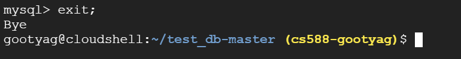
After you're done querying the sample employees dataset use the exit; command to exit the mysql prompt.
This step is optional. If you want to continue to experiment with your Cloud SQL instance, you do not need to delete it at this time. However, the project you are using will continue to be charged for the instance. If you have no further need for this instance, then you should delete it at this time to avoid these charges.
Note that when you delete a Cloud SQL instance, you cannot reuse that instance name for up to a week.
You have two options to delete your Cloud SQL instance.
- Use
gcloudin your Cloud Shell environment. Again, replace codelab-0 with the name of your instance, if different:
$ gcloud sql instances delete codelab-0 All of the instance data will be lost when the instance is deleted. Do you want to continue (Y/n)? Y Deleting Cloud SQL instance...done. Deleted $
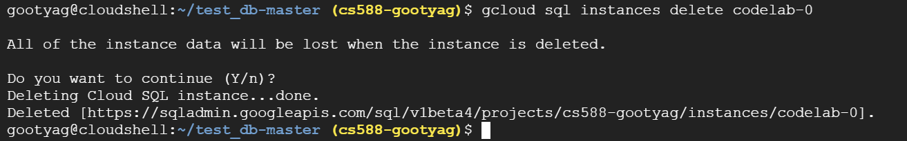
OR
- Return to the Cloud SQL instances page by clicking on SQL in the upper left corner
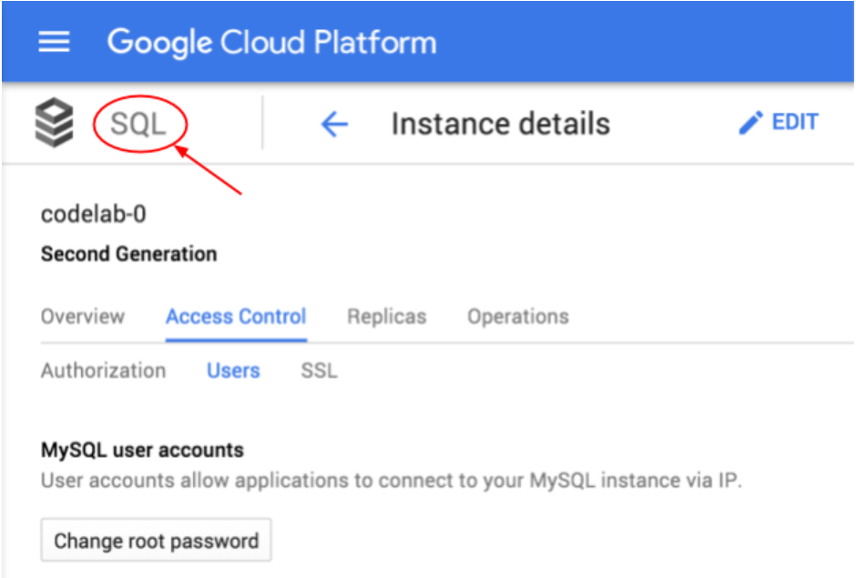
Open the drop down menu next to the instance you want to delete, and choose Delete

Deleting an instance is permanent!
The data from that instance cannot be recovered. To help prevent accidentally deleting the wrong instance, you must confirm the deletion by entering the instance name in a confirmation dialog
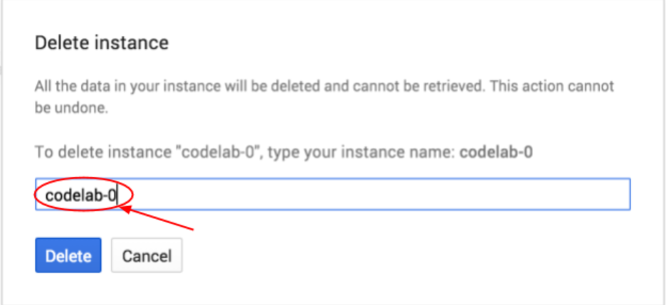
Enter your instance name and press Delete
You have created a new Cloud SQL instance, configured a root password, created an empty database, and (optionally) deleted the Cloud SQL instance.
What we've covered
- Creating Cloud SQL instances via the Google Cloud Console.
- Setting a SQL root password via the Google Cloud Console.
- Connecting to the database using the mysql client.
- Creating a new MySQL database via the mysql prompt.
- Deleting the Cloud SQL instance
Learn More
- View the Google Cloud SQL documentation